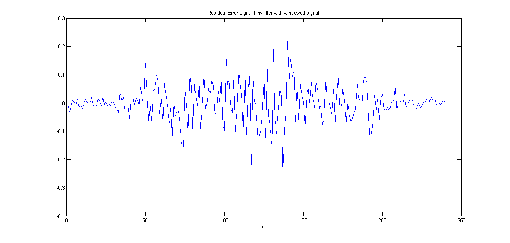
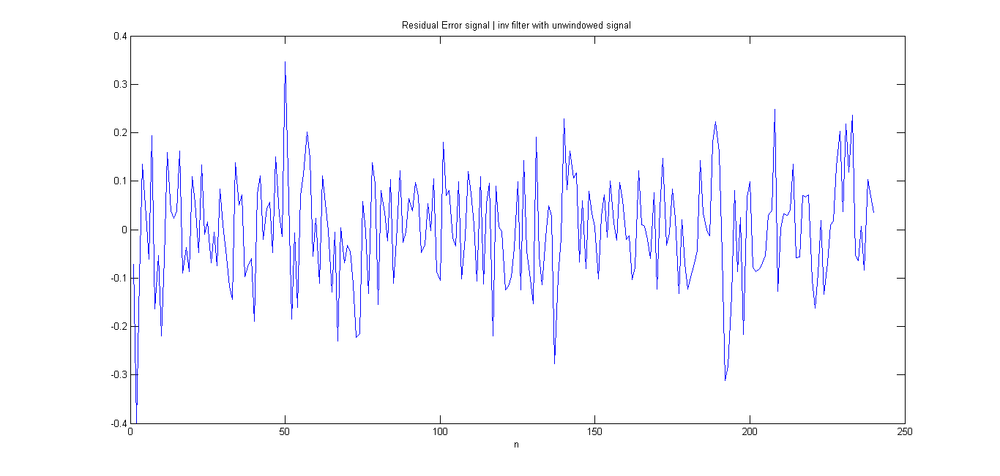

a = [1,1.63614982448397,0.882745291534022,-0.174884140926944,-0.253039240829985,-0.370752035574149,-0.381388031674158,-0.255543293068461,0.00507731220266254,0.124808255685261,0.134048946480061;];
sigma = sqrt(0.011294540783375);
Sa = wavread('s.wav');
Ls = length(Sa);
S = zeros(Ls,1);
S(1) = Sa(1);
S(2:end) = Sa(2:end) - 0.975*Sa(1:end-1);
Lw = 0.03 * 8000;
w = hamming(Lw);
Sw = zeros(Lw+10,1);
Suw = zeros(Lw+10,1);
strt = floor(Ls/2-Lw/2);
Sw(11:Lw+10) = S(strt:strt+Lw-1).*w;
Suw(11:Lw+10) = S(strt:strt+Lw-1);
e1 = zeros(Lw,1);
e2 = zeros(Lw,1);
for i=1:240,
e1(i) = a*Sw(i+10:-1:i)/sigma;
e2(i) = a*Suw(i+10:-1:i)/sigma;
end
figure(1)
plot(e1)
title('Residual Error signal | inv filter with windowed signal')
xlabel('n')
figure(2)
plot(e2)
title('Residual Error signal | inv filter with unwindowed signal')
xlabel('n')
 